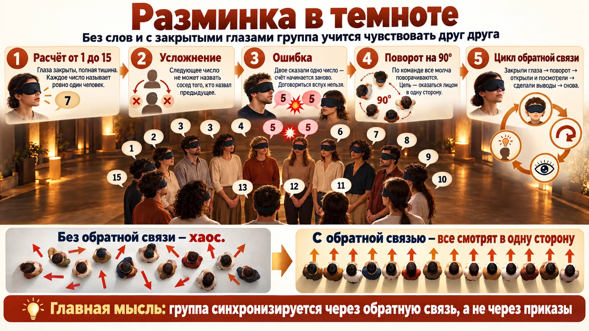
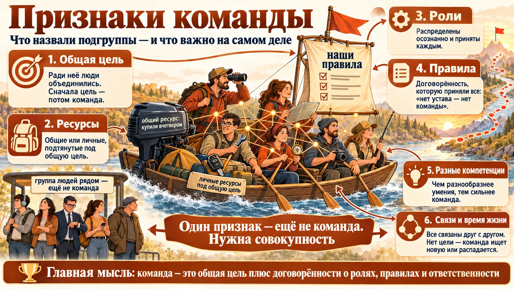
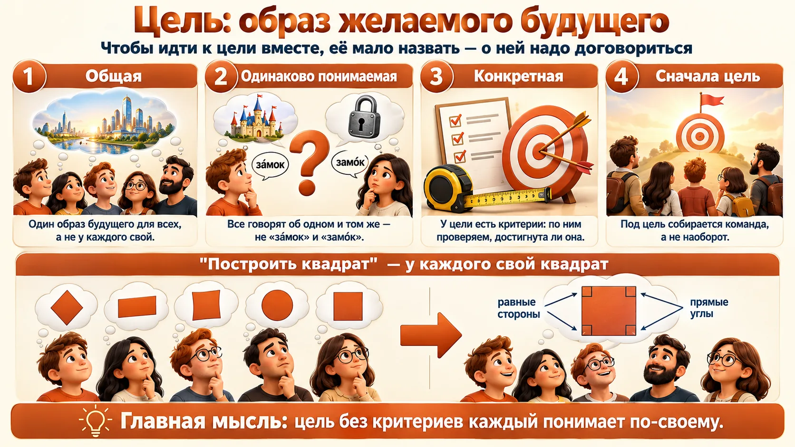
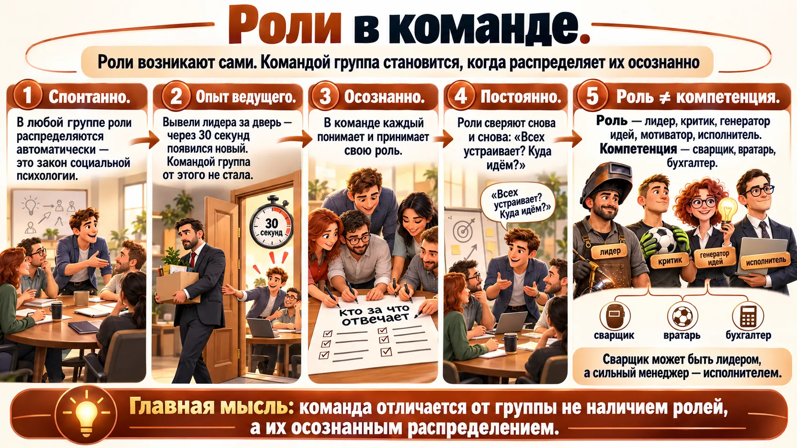
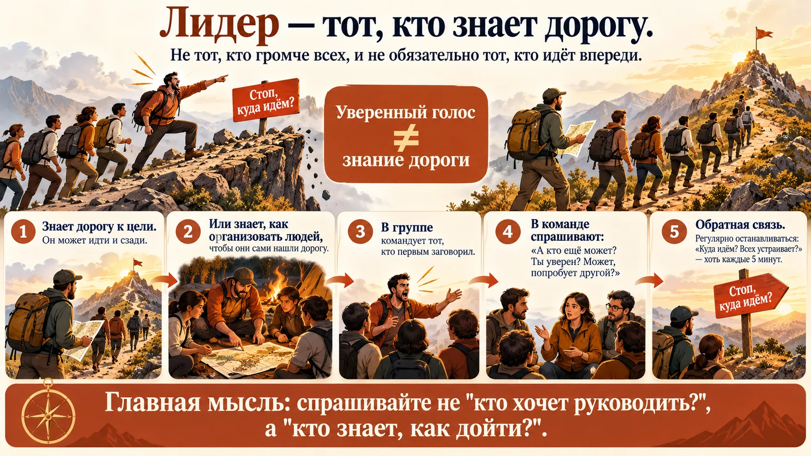
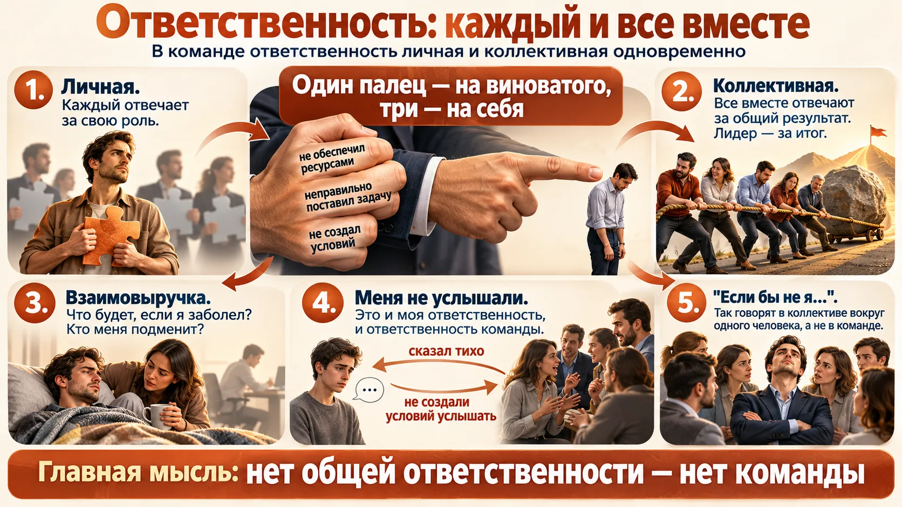
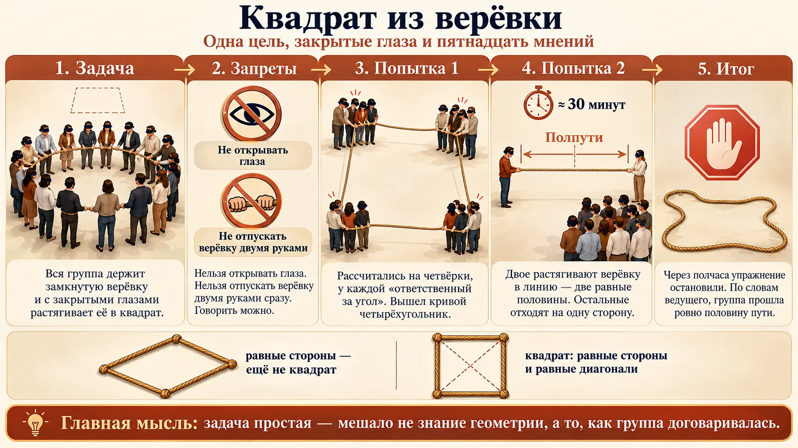
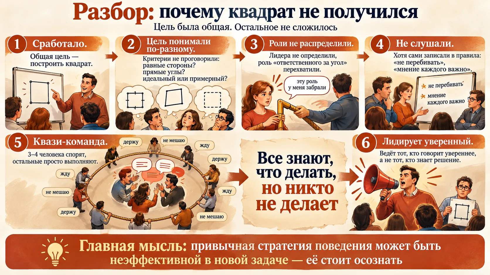
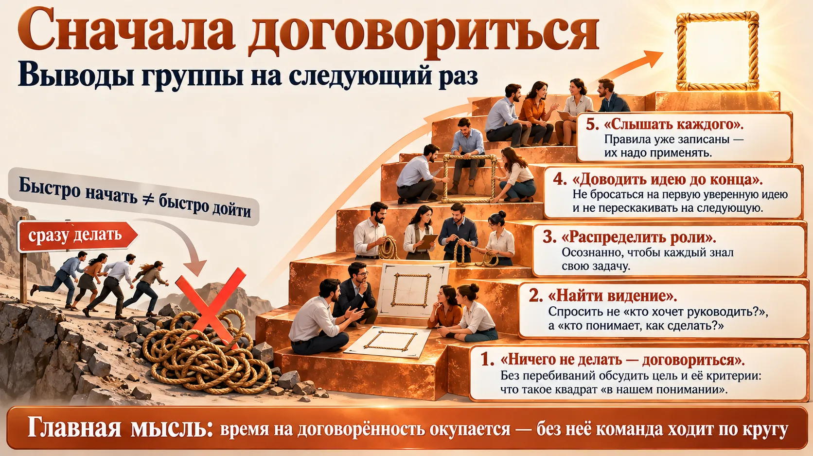
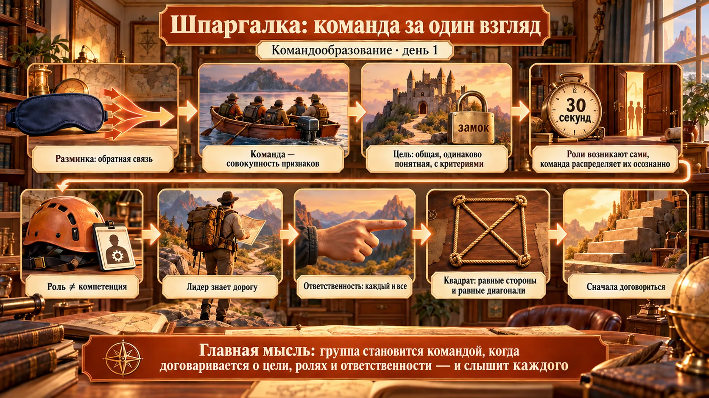

Разминка в темноте
День начался с двух упражнений с закрытыми глазами и в полной тишине. Их смысл — почувствовать, как трудно согласовать действия без договорённостей и без обратной связи.

«Расчёт по порядку»
- Группа из 14–15 человек стоит с закрытыми глазами, в тишине. Нужно рассчитаться от 1 до N так, чтобы каждое число назвал ровно один человек.
- Усложнение: следующее число не может назвать сосед того, кто назвал предыдущее.
- Сбивались: двое говорили одно число одновременно. Ведущий пресекал попытки договориться вслух.
«Поворот на 90°»
- Молча, с закрытыми глазами, по команде «Поворот!» каждый поворачивается на 90°. Цель — в какой-то момент всем оказаться лицом в одну сторону.
- После каждого поворота: открыть глаза → посмотреть → сделать выводы → закрыть глаза → новый поворот. Ведущий назвал это так: «получили обратную связь».
- Затем группу рассчитали на первый–второй–третий и разбили на три подгруппы.
Где ваша команда работает «с закрытыми глазами»
- Найдите процессы, где люди узнают о результате работы соседа через неделю (отчёт, планёрка). Это тот же «поворот вслепую».
- Сократите цикл: короткая сверка «что сделал, что дальше» в начале дня работает как «открыли глаза — посмотрели».
- Две одинаковые «пятёрки» — это дублирование работы. Договоритесь заранее, кто что берёт, а не выясняйте по факту.
Что такое команда
Задание подгруппам: без Google и поисковиков, только по собственному опыту описать, что такое команда, по каким признакам её отличить от «не команды», какие у неё параметры и критерии. Ведущий: «Прежде чем что-то образовывать, нужно понять, что образовывать».
✏️ Сначала сформулируйте сами. Вспомните одну настоящую команду, в которой вы были, и одну группу, которая командой так и не стала. Выпишите 5–7 признаков, по которым вы их различаете. Какие признаки обязательны, а какие желательны? Не читайте дальше, пока не будет списка: ценен именно ваш опыт.
Признаки команды, которые назвали подгруппы
| Признак | Что под ним понимали |
|---|---|
| Общая цель | То, ради чего люди объединились. |
| Общие ресурсы | Спорили: общее имущество («скинулись вчетвером и купили мотор») или личные ресурсы, подтянутые под общую цель (у одного лодка, у другого машина, у третьего палатка). |
| Распределение ролей | Кто руководит, кто генерирует идеи, кто исполняет. |
| Правила, устав, режим | Позиция одной подгруппы: «Нет устава — нет команды». Устав — не регистрационный документ, а внутренние правила. |
| Тактика и стратегия | Как идти к цели. |
| Разнородные компетенции | Чем различнее умения, тем сильнее команда. «Команда из одних лидеров не пройдёт». |
| Атрибутика, девиз, культура | «Творческая душа команды», чтобы был не только сухой расчёт. Обязательно это или желательно — так и не решили. |
| Два и более человека | Один человек — не команда. |
| Время жизни | Команда живёт, пока есть цель. Цель достигнута или потеряна — команда находит новую или распадается. |
| Взаимосвязи | Стрелки на схеме: все непрерывно связаны друг с другом. |
Попутно обсуждали, может ли членом команды быть не человек (служебная собака), и сошлись, что речь прежде всего о команде людей. Один из участников определил идею так: «содержание, обрамлённое корпоративной этикой и направленное на достижение цели».
Что сказал ведущий
- Договориться о понятиях. «Я с вами не спорю. Вопрос в том, чтобы мы договорились, что понимаем под каждым словом».
- Сначала возникает цель, под неё формируется команда.
- Одной общей цели мало. Можно ехать вместе с общей целью и не стать командой. Нужна совокупность признаков.
Классическое определение: Катценбах и Смит
«Команда — это небольшое число людей со взаимодополняющими навыками, которые привержены общей цели, общим задачам и общему подходу к работе и несут взаимную ответственность за результат».
Почти всё это группа назвала сама: цель, разные компетенции, стратегия и правила. Самый недооценённый пункт — взаимная ответственность (раздел 6). По Катценбаху и Смиту, именно она отличает команду от рабочей группы, где каждый отвечает только за свой участок.
J. Katzenbach, D. Smith, «The Discipline of Teams», Harvard Business Review, 1993 — текст статьи; книга «The Wisdom of Teams», 1993.
«Есть общая цель — значит, команда»
Нет. Пассажиры одного автобуса едут в одно место, но командой не становятся. Команда — это совокупность признаков: общая и одинаково понятая цель, осознанные роли, принятые правила, взаимная ответственность.
Проверьте свою команду по списку
- Сравните свой список признаков со списком группы и с Катценбахом: чего нет у вас?
- Пройдите по признакам применительно к своей команде. Где «да, но только на бумаге»? Например, правила записаны, но никто их не помнит.
- Если у проекта кончилась цель, а люди остались, не делайте вид, что команда живёт. Поставьте новую цель или честно распустите группу.

Цель: общая, одинаково понимаемая, конкретная
Первый признак, о котором вспомнили все, оказался и самым коварным. Назвать цель легко. Договориться, что под ней понимает каждый, — труднее.

«Образ желаемого будущего» — это не Ожегов
На занятии формулировку приписали словарю Ожегова. В толковом словаре цель — это «то, к чему стремятся, что надо осуществить». «Образ желаемого будущего» — формулировка из менеджмента и психологии; она близка к «модели потребного будущего» физиолога Н. А. Бернштейна. Суть от этого не меняется, но в тесте ссылку на Ожегова лучше не повторять.
Как сделать цель конкретной: SMART
Самый известный способ проверить цель на конкретность — критерии SMART: конкретная (Specific), измеримая (Measurable), достижимая (Achievable), значимая (Relevant), ограниченная по времени (Time-bound). «Построить квадрат» не проходит по букве M: непонятно, чем мерить. «Растянуть верёвку так, чтобы четыре стороны и обе диагонали были равны с точностью до 5 см» — проходит.
G. T. Doran, «There's a S.M.A.R.T. way to write management's goals and objectives», Management Review, 1981. Расшифровки букв у разных авторов немного различаются.
Тест «зáмок — замóк» за две минуты
- Поставив задачу, попросите трёх человек письменно и независимо описать, как будет выглядеть готовый результат. Сравните. Расхождения — это и есть «замки».
- Добавьте к задаче строку «Как проверим, что сделано» — с цифрой или признаком.
- Слова «качественно», «быстро», «красиво» без критериев каждый поймёт по-своему.
Роли: спонтанные и осознанные
Роли есть в любой группе. Разница в том, как они появились: сами собой или по договорённости.

Спонтанно — ещё не команда
- По законам социальной психологии в любой группе роли распределяются автоматически и спонтанно.
- Опыт ведущего: группе дают задачу, он видит, кто лидирует, и выводит лидера за дверь. Через 30 секунд появляется новый. Но командой группа от этого не становится.
Осознанно и постоянно
- В команде распределение ролей осознанное и согласованное: каждый понимает и принимает свою роль.
- Это не делается раз и навсегда. Это постоянный процесс с обратной связью: «Стоп, ребята, куда идём? Всех устраивает?» Он может повторяться хоть каждые 5 минут.
| Командная (психологическая) роль | Компетенция (функционал) | |
|---|---|---|
| Что это | Как человек ведёт себя в команде | Что человек умеет делать по профессии |
| Примеры из занятия | Лидер, критик, генератор идей, мотиватор, вдохновитель, исполнитель | Вратарь, нападающий, сварщик, тракторист |
| Как сочетаются | Независимо: сварщик может быть лидером, а сильный менеджер — исполнителем. В конкретной задаче сварщик может лучше всех видеть, как организовать людей. | |
Роль ≠ должность ≠ компетенция
Вратарь — это функционал, а не командная роль. «Тренер поставил нападающего на ворота» — ошибка распределения компетенций, а не ролей. На занятии ведущий отдельно остановился на этой путанице.
Командные роли по Белбину
Ведущий упомянул, что в разных концепциях командных ролей от 7 до 10. Самая известная — модель Мередита Белбина, в ней 9 ролей: генератор идей (Plant), исследователь ресурсов, координатор, мотиватор (Shaper), аналитик-критик (Monitor Evaluator), командный работник, реализатор, доводчик и специалист. Главный вывод Белбина: успешные команды — сбалансированные. Команда из одних «умников» проигрывает, как и «команда из одних лидеров», о которой говорили подгруппы.
R. M. Belbin, «Management Teams: Why They Succeed or Fail», 1981 (8 ролей); роль «специалист» добавлена в 1993 году — belbin.com.
Распределите роли вслух
- На старте проекта назовите не только «кто что делает» (компетенции), но и «кто критикует идеи», «кто следит за временем», «кто собирает решение».
- Если в команде нет критика, его роль кто-то должен взять осознанно. Иначе первая идея пройдёт без проверки.
- Раз в неделю спрашивайте: «Роли всех устраивают? Кому нужна помощь?»
Лидер: тот, кто знает дорогу
Ведущий спросил группу, кто такой лидер. «Тот, кто поведёт за собой» — «Не обязательно за собой».

В группе
Командовать начинает тот, кто первым заговорил. «Я знаю, давайте я буду» — а через полчаса выясняется, что пришли не туда.
В команде
«А кто ещё может? Ты уверен? Может, кто-то другой попробует? Нет? Хорошо, давай». А потом — регулярная обратная связь: «Стоп, куда идём? Всех устраивает? Двигаемся дальше».
Лидер — одна позиция из многих
Лидер — лишь одна из ролей, «без остальных уже никуда». Существуют концепции командных ролей, возможно и распределённое лидерство, когда в разных задачах ведут разные люди.
Лидер ≠ самый уверенный ≠ назначенный начальник
Уверенный голос — не признак знания дороги. Формальный руководитель тоже не обязательно лидер в конкретной задаче. Правильный вопрос к группе: не «кто хочет руководить?», а «кто понимает, как дойти?».
Как выбрать того, кто поведёт
- Прежде чем кто-то возьмёт слово «давайте я», попросите двух-трёх человек коротко изложить своё видение решения.
- Если вы руководитель, но дорогу лучше знает специалист, отдайте ему лидерство в этой задаче и оставьте себе роль координатора.
- Назначьте «точки сверки» по ходу работы: в них любой может сказать «стоп, куда идём?».
Ответственность: каждый и все вместе
Спор в группе: «Коллективной ответственности не бывает, отвечает лидер» — «Каждый отвечает за свою роль». Ведущий подвёл итог.

Три пальца ☝️
Когда руководитель указывает пальцем на виноватого, три пальца указывают на него самого: не обеспечил ресурсами, неправильно поставил задачу.
«Меня не услышали» 🔇
Команда держится на коммуникации. Если меня не услышали, это и моя ответственность (плохо сформулировал, говорил тихо), и ответственность команды (не создала условий, чтобы услышать).
«Если бы не я…» 🙅
Когда один говорит «если бы не я, у вас бы ничего не получилось», это уже не команда, а коллектив, который держится на одном человеке.
Психологическая безопасность: почему люди молчат
Ситуацию «что ж ты раньше молчал? — меня не услышали» изучала Эми Эдмондсон из Гарвардской школы бизнеса. Психологическая безопасность — общее убеждение в команде, что можно высказаться, задать вопрос или признать ошибку и тебя за это не накажут и не высмеют. В таких командах о проблемах говорят раньше и лучше учатся на ошибках. Позже Google в исследовании «Проект Аристотель» назвал её главным фактором эффективности своих команд.
A. Edmondson, «Psychological Safety and Learning Behavior in Work Teams», Administrative Science Quarterly, 1999; Google re:Work, Project Aristotle.
Ведущий признался, что метафора «трёх пальцев» ему очень нравится. Эффективный руководитель, по его мнению, при неудаче спрашивает не «кто виноват?», а «что не получилось в том, о чём мы договорились?». Это не закон, а позиция тренера.
Разбор неудачи без поиска виноватого
- Начните разбор с себя: какие ресурсы я не дал, что в постановке задачи было неясно.
- Вопрос «почему ты молчал?» замените на «что мешало сказать раньше?».
- Для каждой ключевой роли назначьте дублёра: взаимозаменяемость — часть общей ответственности.
«Квадрат из верёвки»
После перерыва теорию проверили делом. Вся группа держится за замкнутую верёвку, глаза закрыты. Задача — растянуть верёвку в квадрат.
Условие
- Вся группа (около 15 человек) держит замкнутую верёвку.
- Запрет 1: нельзя открывать глаза.
- Запрет 2: нельзя отпускать верёвку двумя руками одновременно. Скользить по ней и перехватываться одной рукой можно.
- Говорить разрешено. Всё остальное тоже можно.
Напоминание ведущего
Перед заданием ведущий зачитал группе её собственные правила, записанные раньше: «не перебивать друг друга» и «мнение каждого важно».
✏️ Сначала придумайте сами. Вы в этой группе, глаза закрыты. Как построить квадрат? Запишите план в 3–5 шагов: кто что делает, как найти четыре угла, как проверить, что получился квадрат, а не ромб. И главное — как вы договоритесь об этом за минуту, если говорят все сразу? Только потом читайте, как шло у группы.
Как шло решение
- Четвёрки. Рассчитались на четвёрки: по четыре человека на каждую сторону, в каждой «ответственный за угол». Выравнивались плечом к плечу, отходили по полшага. Получился кривой четырёхугольник.
- Вопрос ведущего: «Кто расстроится, если получится не идеальный квадрат?» Ответы разошлись. Кто-то сказал: «У нас не было задачи сделать идеальный квадрат».
- Новая идея. Двое из противоположных углов растягивают верёвку в линию — получаются две равные половины. Остальные переходят на одну сторону, чтобы не мешать. Дальше «угловые» сходятся, верёвка складывается в четыре равных отрезка, назначаются ещё два угла, и четверо расходятся.
- Параллельно предлагали другие варианты, например сначала сделать круг. Несколько человек говорили одновременно, ни одну идею не довели до конца. Ведущий: «Четыре человека говорят, ни одного до конца не послушали».
- Итог. Примерно через полчаса ведущий остановил упражнение. Квадрат не построили. По его словам, группа прошла ровно половину пути, а решение «элементарное». Подумать оставили до завтра.
Геометрия, о которой вспомнили на ходу
Один из участников сказал вслух: стороны можно сделать равными, но тогда нужны ещё две одинаковые диагонали, «чтобы это был не ромб». Так и есть: четыре равных отрезка верёвки дают ромб с любым углом. Квадратом он становится, когда диагонали равны (или углы прямые). «Похоже на квадрат» не критерий. Равенство сторон и диагоналей — критерий, его можно проверить на ощупь, натянув верёвку между противоположными углами. Само «элементарное решение» ведущий на занятиях не раскрыл, поэтому здесь его нет.
Попробуйте в тренажёре. (1) «Как у группы»: стороны разные — фигуру легко «доказать» квадратом, если критерии не договорены. (2) «Равные отрезки, угол на глаз»: стороны равны, а это ромб. Подвигайте угол — при каком угле диагонали сравняются? (3) Уменьшите допуск до 0: идеальный квадрат или «примерный» — это тоже договорённость.

Разбор: что сработало и что нет
Ведущий попросил каждого подумать, какую стратегию поведения он выбрал и почему. Потом разобрали упражнение по признакам команды из раздела 2.

Какие стратегии выбрали участники
- Молчать: «мне сказали держать — я держу», «не мешаю».
- Ждать, а потом призвать: «давайте уже что-то делать».
- Не перекрикивать и дать другим проявить себя.
- «Включились мужчины, и я отдала всё им» — лидером быть не хотела.
Привычная стратегия могла хорошо работать в жизни, но здесь оказалась неэффективной. Это стоит осознать.
✅ Общая цель
Все хотели построить квадрат. Но, как мы уже знаем, одной цели мало.
❌ Всё остальное
- Цель понимали по-разному. Критерии не проговорили: равные стороны, прямые углы, «идеальный» или «примерный». О равных сторонах многие задумались, только когда об этом сказал один участник.
- Роли не распределили осознанно. «По плану я регулирую угол, но эту роль у меня забрали». Лидера не определили.
- Не слушали друг друга, хотя сами записали это в правила.
Эффект Рингельмана: чем больше группа, тем меньше вклад каждого
Французский инженер Максимилиан Рингельман ещё в конце XIX века заметил: когда люди тянут канат группой, усилие каждого меньше, чем когда он тянет один. Позже социальные психологи назвали это социальной леностью: в большой группе вклад одного не виден, и люди невольно «держат верёвку», не включаясь. Средство то же, что на занятии: осознанные роли и видимый вклад каждого.
B. Latané, K. Williams, S. Harkins, «Many hands make light the work», Journal of Personality and Social Psychology, 1979; обзор — Ringelmann effect.
Попробуйте в тренажёре. Посмотрите профиль «Группа на „Квадрате“, день 1»: цель высокая, всё остальное проседает — отсюда «квази-команда». Затем выберите «Моя команда» и честно оцените свою. Три слабых звена — темы для ближайшей планёрки.
Заметьте свою стратегию
- Вспомните последнее совещание. Вы говорили, ждали, молчали «чтобы не мешать»? Это осознанный выбор или привычка?
- Если на совещании говорят 3–4 человека из 15, спросите молчащих напрямую. Они могут знать решение.
Алгоритм «Сначала договориться»
В конце ведущий спросил: «Что бы вы посоветовали себе и друг другу на завтра?» Группа сформулировала выводы сама.

«Все знают, что делать, но никто не делает. Все говорят, как делать, но никто не делает. А кто готов делать — не понимают, что происходит». При этом ведущий отметил положительную динамику: участники стали лучше знакомиться и взаимодействовать.
Стадии развития группы по Такману
То, что группа прожила за вечер, хорошо ложится на классическую модель Брюса Такмана:
- Формирование (forming) — знакомство, осторожность, ориентация на ведущего. Разминка и первые схемы.
- Бурление (storming) — споры за влияние и подход, перебивания. Середина «Квадрата».
- Нормирование (norming) — договорённости о правилах и ролях. Выводы на завтра.
- Функционирование (performing) — работа на результат.
- Расформирование (adjourning, добавлено в 1977 году) — завершение, когда цель достигнута. Подгруппы говорили о нём как о «времени жизни команды».
B. W. Tuckman, «Developmental sequence in small groups», Psychological Bulletin, 1965; B. W. Tuckman, M. A. C. Jensen, 1977.
Порядок стадий Такмана
Бурление (storming) идёт до нормирования (norming), а не после. Конфликт на старте — нормальная стадия, а не признак того, что команда не сложится.
Первые 10 минут любой новой задачи
- Минуты 1–3: что считаем результатом и как его проверим.
- Минуты 4–7: у кого есть видение? Выслушать двоих, не перебивая. Выбрать одно и договориться довести его до конца.
- Минуты 8–10: кто за что отвечает и когда остановимся сверить «куда идём».
Что выучить к аттестации
Формат аттестации пока не объявлен. Отмечайте пункт, когда можете объяснить его своими словами без подсказки. Отметки сохраняются в браузере.
Первый день тренинга усвоен.
Проверьте себя
Пятнадцать вопросов. После ответа — правильный вариант и короткий разбор.
1. Что, по итогам обсуждения, отличает команду от группы?
2. Что возникает раньше — цель или команда?
3. Какие три свойства цели назвали на занятии?
4. Зачем на занятии вспомнили «зáмок» и «замóк»?
5. Ведущий вывел лидера группы за дверь. Что произошло?
6. Чем распределение ролей в команде отличается от группы?
7. Что из перечисленного — командная роль, а не компетенция?
8. Сколько ролей в модели командных ролей Белбина (в современной версии)?
9. Кто такой лидер по определению с занятия?
10. Какая ответственность должна быть в команде?
11. Что означает метафора «трёх пальцев»?
12. Участника «не услышали». Чья это ответственность?
13. Какие два запрета были в «Квадрате из верёвки»?
14. Четыре стороны верёвочной фигуры равны. Это квадрат?
15. Как ведущий назвал то, что сложилось в «Квадрате»?
Отвечено: 0 / 15
Шпаргалка: главное из занятия

- Команда — совокупность признаков, а не одна общая цель: одинаково понятая цель, осознанные роли, принятые правила, взаимная ответственность.
- Цель — образ желаемого будущего: общий, одинаково понимаемый и конкретный, с критериями проверки.
- Роли появляются сами в любой группе. Команда распределяет их осознанно и сверяет постоянно. Роль ≠ компетенция.
- Лидер знает дорогу к цели, а не говорит громче всех. Спрашивайте «кто понимает, как дойти?».
- Ответственность — личная и общая сразу. Один палец на виноватого, три — на себя.
- Сначала договориться, потом делать. Выслушать идеи, выбрать одну и довести её до конца, слышать каждого.